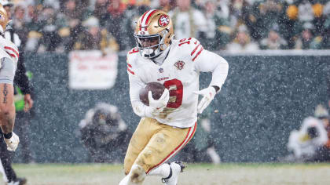
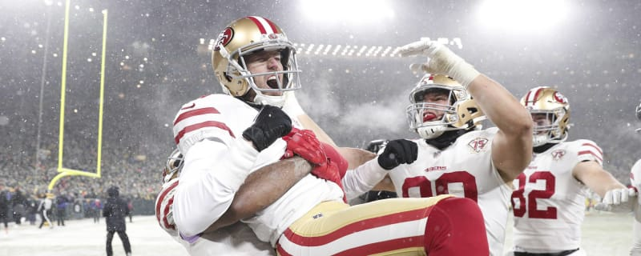

The 49ers offense was completely shutdown by the Packers, putting up 0 points in the first half. On the other hand, the 49ers defense held Aaron Rodgers and company to only 7 points.
In Green Bay fashion, during the beginning of the 3rd quarter, it began to start snowing. conditions slowly got worse as the game went on. 
as the 49ers offense continues to struggle, only putting 3 points up in the 2nd half, the 49ers needed something to go their way in order to win the game. with 5 minutes left, Packers up 7, the 49ers block their punt and return it for a touchdown!. the score is now 10-10 late in the 4th. the next Packers drive the 49ers defense stall it and forces them to punt it away. with 3 minutes remaining, the 49ers have a shot at punching their ticket to the NFC Championship game. The 49ers offense moves down field & sets up Robbie Gould to kick the game winning field goal. from 45 yards out, Gould nails the field goal and the 49ers stay alive in the post-season!
the 49ers will play either the Rams or Buccaneers in the NFC Championship